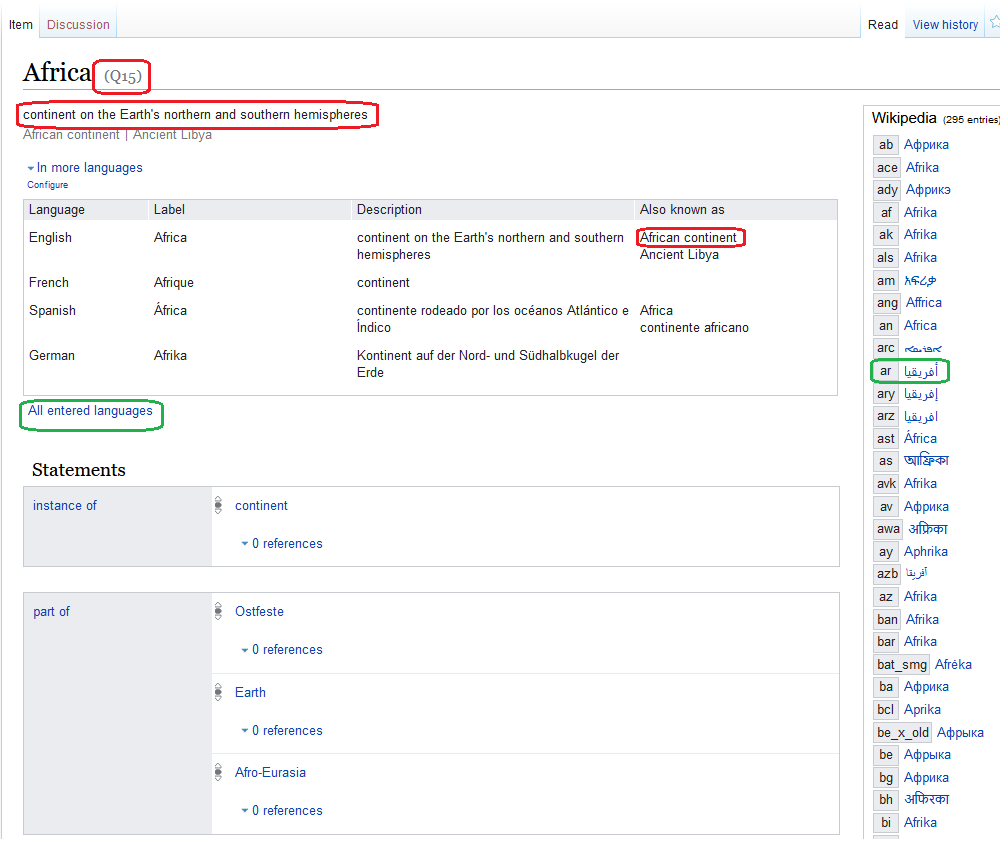

Chapter 4 Wikidata
library(knitr)
library(dplyr)
library(WikidataR)
library(quanteda)Authors : Claude Grasland & Etienne Toureille
4.1 Introduction
The objective of this short note is to explore the possibility of Wikidata for the production of multilingual dictionaries of world regions and more generally regional imaginations. In order to test the interest of this approach, we will try to produce multilingual dictionaries for the identification of five groups of entities :
- Europe and its subregions
- Africa and its subregions
- Asia and its subregions
- Mediterranea
- Middle East, Near East, Persian Gulf …
The dictionary will be established in five languages of interest for the project IMAGEUN :
- english : applied to media of UK and Ireland
- french : applied to media of France and Tunisia
- german : applied to media of Germany
- turkish : applied to media of Turkey
- arabic : applied to media of Tunisia
4.2 Wikidata
Wikidata defines itself as
- a free and open knowledge base that can be read and edited by both humans and machines.
- as central storage for the structured data of its Wikimedia sister projects including Wikipedia, Wikivoyage, Wiktionary, Wikisource, and others.
- a support to many other sites and services beyond just Wikimedia projects! The content of Wikidata is available under a free license, exported using standard formats, and can be interlinked to other open data sets on the linked data web.
4.2.1 Codification of entities
The first interest of wikidata is to provide unique code of identifications of objects. For example a research about “Africa” will produce a list of different objects characterized by a unique code :
knitr::include_graphics("pics/Wikidata001.png")
4.2.2 Informations on entities
Once we have selected an entity (e.g. Q15) we obtain a new page with more detailed informations in english but also in all other languages available in Wikipedia.
knitr::include_graphics("pics/Wikidata002.png")
A lot of information are available concerning the entity but, at this stage, the most important ones for our research are :
- the translation in different languages
- the equivalent words or expression in different languages
- the definitions in different languages
- the ambiguity of the term in each language and the potential risks of confusion with other entities.
Of course we should not take for granted the answers proposed by wikidata (as noticed by Georg, Wikipedia is a matter of research for IMAGEUN …) but without any doubt, it offers a very good opportunity to clarify our questions and help us to build tools for recognition of world regions and other geographical imaginations in a multilingual perspective.
4.2.3 Wikipedia entities as nodes of an ontolongy
It appears crucial to introduce here a clear distinction between Wikipedia entities and textual units associated to the names and definiton of this units.
A wikipedia entity like Q15 is an element of an ontology designed by its author for specific purposes. The specificity of the wikidata ontology is the fact that it is a multilinligual web where Q15 is a node of the web present in different linguistic layers. It means that we don’t have a single name or a single definition of Q15, except if we adopt the neocolonial perspective to choose the english language as reference. Depending on the context (i.e. the language or sub-language), Q15 could be defined as :
- (fr) : A “continent” named “Afrique”"
- (en) : A “continent on the Earth’s northern and southern hemispheres” named “Africa” or “African continent”
- (de) : A “Kontinent auf der Nord- und Südhalbkugel der Erde” named “Afrika”
- (tr) : A “Dünya’nın kuzey ve güney yarıkürelerindeki bir kıta” named “Afrika” or “Afrika kıtası”
- (ar) : The " ثاني أكبر قارات العالم من حيث المساحة وعدد السكان، تأتي في المرتبة الثانية بعد آسيا" 1 named “إفريقيا” or “القارة الأفريقية”
In other words the existence of the same code of wikipedia entities does not offer any guarantee of concordance between the geographical objects found in news published in different languages or different countries. But - and it is the important point - it help us to point similarities and differences between set of geographical entities that are more or less comparable in each language.
4.2.4 A tool for cross-linguistical experiments
Having in mind the limits of the equivalence of entities across languages, it can nevertheless be an interesting experience to select a set of wikipedia entities (Q15, Q258, Q4412 …) and to examine their relative frequency in our different media from different countries with different languages. A typical hypothesis could be something like :
- Is Q15 more mentionned than Q46 in Tunisian newspapers ?
which is not equivalent to the question
- Is Africa more mentionned than Europe in Tunisian newspapers
but rather equivalent to the two joint questions
- Is the textual unit “Afrique” more mentionned than the textual unit “Europe” in Tunisian newspapers published in french language.
- Is the textual unit “إفريقيا” more mentionned than the textual unit “أوروبا” in Tunisian newspapers published in arabic language.
4.3 The package WikidataR
The package WikidataR is an interface for the use of the Wikidata API in R language. Equivalent tools are available in Python and other languages for those non familiar with R. And it is of course possible to use directly the API. The first step is to install the most recent version of the R package WikidataR which install also related packages of interest.
#install.packages("WikidataR")
library(WikidataR)4.3.1 Basic operations
(based on Etienne Toureille previous experiments)
4.3.1.1 identification of entities of interest
The function find_item will help to find all wikipedia entities (=items) associated to a textual unit (word or group of word) in given language. Let’s start with the research of entities associated to “Afrique” in french language :
mytext <- "Afrique"
items <- find_item(search_term = mytext,
language = "fr",
limit=30)
class(items)[1] "find_item"length(items)[1] 30The resulting object is an object from type find_item which is in practice a list describing the entities that has been recognized associated to the textual unit that we have chosen. In the french cas, we have found 50 entities that match with our textual unit. Let’s have a look at the first one :
items[[1]]$id
[1] "Q15"
$title
[1] "Q15"
$pageid
[1] 111
$repository
[1] "wikidata"
$url
[1] "//www.wikidata.org/wiki/Q15"
$concepturi
[1] "http://www.wikidata.org/entity/Q15"
$label
[1] "Africa"
$description
[1] "continent on the Earth's northern and southern hemispheres"
$match
$match$type
[1] "label"
$match$language
[1] "fr"
$match$text
[1] "Afrique"
$aliases
$aliases[[1]]
[1] "Afrique"As we can see we can easily identify the code the label and description in english but also the text responsible from the matching answer in french. We can therefore create a function item_info that extract all elements of interest and put them in a table in order to have a complete view.
item_info <- function(my_item){
if (is.null(my_item$id) == F){item_id = my_item$id}
else {item_id = NA}
if (is.null(my_item$label) ==F){item_label = my_item$label}
else {item_label = NA}
if (is.null(my_item$desc) == F) {item_desc= my_item$desc}
else {item_desc = NA}
if (is.null(my_item$match$lang) ==F){item_lang = my_item$match$lang}
else {item_lang = NA}
if (is.null(my_item$match$text) ==F){item_text = my_item$match$text}
else {item_text = NA}
res<-data.frame(item_id,item_label,item_desc,item_lang,item_text)
return(res)
}For example :
item_info(items[[1]]) item_id item_label item_desc
1 Q15 Africa continent on the Earth's northern and southern hemispheres
item_lang item_text
1 fr AfriqueWe build then a second function that extract all the wikipedia entities associated to a textual unit for a given language
extract_entities <- function(mytext= "Afrique",
mylang = "fr",
maxres = 20) {
# Extract items
items <- find_item(search_term = mytext,
language = mylang,
limit = maxres)
# Create empty dataset
res<-data.frame()
res$item_id <- as.character()
res$item_label <- as.character()
res$item_desc <- as.character()
res$item_lang <- as.character()
res$item_text <- as.character()
# Fill dataset
k<-length(items)
for (i in 1:k) {
res <- rbind(res,item_info(items[[i]]))
}
# Return dataset
return(res)
}For example :
tab <- extract_entities("Afrique","fr",20)
kable(tab)| item_id | item_label | item_desc | item_lang | item_text |
|---|---|---|---|---|
| Q15 | Africa | continent on the Earth’s northern and southern hemispheres | fr | Afrique |
| Q181238 | Africa | Roman province on the northern African coast covering parts of present-day Tunisia, Algeria, and Libya | fr | Afrique |
| Q203548 | African Plate | continental plate underlying Africa | fr | Afrique |
| Q258 | South Africa | sovereign state in Southern Africa | fr | Afrique du Sud |
| Q4412 | West Africa | region of Africa | fr | Afrique de l’Ouest |
| Q132959 | Sub-Saharan Africa | area of the continent of Africa that lies south of the Sahara Desert | fr | Afrique subsaharienne |
| Q27394 | Southern Africa | southernmost region of the African continent | fr | Afrique australe |
| Q27407 | East Africa | easterly region of the African continent | fr | Afrique de l’Est |
| Q27381 | North Africa | northernmost region of the African continent | fr | Afrique du Nord |
| Q2826196 | Afrique | Wikimedia disambiguation page | fr | Afrique |
| Q23639892 | Africa | artwork by Eugène Delaplanche in Paris, France | fr | Afrique |
| Q66022909 | Afrique | NA | fr | Afrique |
| Q153963 | German East Africa | former German posesssion in the African Great Lakes region between 1884–1919 | fr | Afrique orientale allemande |
| Q4690138 | Afrique | album by Count Basie | fr | Afrique |
| Q65574303 | Afrique | NA | fr | Afrique |
| Q56317928 | Afrique | NA | fr | Afrique |
| Q210682 | French West Africa | French colonial federation (1895–1958) | fr | Afrique-Occidentale française |
| Q27433 | Central Africa | core region of the African continent | fr | Afrique centrale |
| Q106179043 | Afrique | NA | en | Afrique |
| Q271894 | French Equatorial Africa | federation of French colonial possessions in Central Africa | fr | Afrique-Équatoriale française |
As we can see, many of the entities proposed in he list are not interesting and we will probably have to select one by one the entities of interest. But we have clearly to keep two different list of entities :
- the target entities : that we consider as potential world regions or candidate to te title of “geographic imagination”.
- the control entites : that we have to identify or eliminate if we want to identify correctly our target entities like the country of South Africa
In the case of Africa, we could for example establish a more limited list
entit <- c("Q15", "Q4412","Q132959", "Q27394","Q27407","Q27381","Q27433","Q258")
tab<-tab %>% filter(item_id %in% entit)
kable(tab)| item_id | item_label | item_desc | item_lang | item_text |
|---|---|---|---|---|
| Q15 | Africa | continent on the Earth’s northern and southern hemispheres | fr | Afrique |
| Q258 | South Africa | sovereign state in Southern Africa | fr | Afrique du Sud |
| Q4412 | West Africa | region of Africa | fr | Afrique de l’Ouest |
| Q132959 | Sub-Saharan Africa | area of the continent of Africa that lies south of the Sahara Desert | fr | Afrique subsaharienne |
| Q27394 | Southern Africa | southernmost region of the African continent | fr | Afrique australe |
| Q27407 | East Africa | easterly region of the African continent | fr | Afrique de l’Est |
| Q27381 | North Africa | northernmost region of the African continent | fr | Afrique du Nord |
| Q27433 | Central Africa | core region of the African continent | fr | Afrique centrale |
But this list which was based on the french textual units associated to “Afrique” should certainly be completed by equivalent list established for other languages with different seeds (“Africa” in english, “Afrika” in german, …)
4.3.2 Elaboration of a cross_linguistic dictionnary
Admitting that we have established a list of wikipedia entities of interest, we can now turn to the creation of a dictionary for the identification of these entities in different languages. We will use for that purpose the powerful function get_properties
item_prop <- get_property("Q15")[[1]]The result is a very large object (list of list) which provide all the informations (or links toward these information) in all languages wher the object is available. The problem is therefore to understand the structure of this object and to extract exactly what we need. In our case, we want to extract for each language of interest.
The information will be separated in two datasets :
- dictionary of definitions
- dictionary of labels and aliases
We create two functions dedicated to each of the tasks
extract_def <- function(item = c("Q15", "Q246"),
langs = c("fr","de","en","tr","ar")) {
# Create empty dataset
res<-data.frame()
res$id <- as.character()
res$lang <- as.character()
res$label <- as.character()
res$desc <- as.character()
# Loop of items
n <- length(item)
for (i in 1:n) {
# Extract item properties
item_prop <- get_property(item[i])[[1]]
# Loop of language
p<-length(langs)
for (j in 1:p) {
id <- item[i]
lang <- langs[j]
if(is.null(item_prop[["labels"]][[lang]]$value)==F) {label <- item_prop[["labels"]][[lang]]$value}
else { label <- NA}
if(is.null(item_prop[["descriptions"]][[lang]]$value)==F) {desc <- item_prop[["descriptions"]][[lang]]$value}
else { desc <- NA}
add <-data.frame(id,lang,label,desc)
res<- rbind(res,add)
}
}
# Export result
return(res)
}The function works proprerly as long as the entities are available in all languages. It should be adapted to prevent errors when an entity is not available in one language.
entit <- c("Q15", "Q4412","Q132959", "Q27394","Q27407","Q27381","Q27433","Q258")
tab<-extract_def(entit,c("fr","de","tr","en","ar"))
kable(tab)| id | lang | label | desc |
|---|---|---|---|
| Q15 | fr | Afrique | continent |
| Q15 | de | Afrika | Kontinent auf der Nord- und Südhalbkugel der Erde |
| Q15 | tr | Afrika | Dünya’nın kuzey ve güney yarıkürelerindeki bir kıta |
| Q15 | en | Africa | continent on the Earth’s northern and southern hemispheres |
| Q15 | ar | إفريقيا | ثاني أكبر قارات العالم من حيث المساحة وعدد السكان، تأتي في المرتبة الثانية بعد آسيا |
| Q4412 | fr | Afrique de l’Ouest | région d’Afrique |
| Q4412 | de | Westafrika | Kontinentalteil |
| Q4412 | tr | Batı Afrika | Afrika’nın batısındaki 16 ülkenin bulunduğu alan |
| Q4412 | en | West Africa | region of Africa |
| Q4412 | ar | غرب أفريقيا | المنطقة الغربية للقارة الأفريقية |
| Q132959 | fr | Afrique subsaharienne | partie du continent africain au sud du Sahara |
| Q132959 | de | Subsahara-Afrika | südlich der Sahara gelegener Teil Afrikas |
| Q132959 | tr | Sahraaltı Afrika | NA |
| Q132959 | en | Sub-Saharan Africa | area of the continent of Africa that lies south of the Sahara Desert |
| Q132959 | ar | أفريقيا جنوب الصحراء | جزء من القارة الأفريقية يقع جنوب الصحراء الكبرى |
| Q27394 | fr | Afrique australe | région la plus méridionale du continent africain |
| Q27394 | de | Südliches Afrika | Region in Afrika |
| Q27394 | tr | Güney Afrika | NA |
| Q27394 | en | Southern Africa | southernmost region of the African continent |
| Q27394 | ar | أفريقيا الجنوبية | المنطقة الجنوبية للقارة الأفريقية |
| Q27407 | fr | Afrique de l’Est | région d’Afrique |
| Q27407 | de | Ostafrika | Region in Afrika |
| Q27407 | tr | Doğu Afrika | NA |
| Q27407 | en | East Africa | easterly region of the African continent |
| Q27407 | ar | شرق أفريقيا | المنطقة الشرقية للقارة الأفريقية |
| Q27381 | fr | Afrique du Nord | région en Afrique |
| Q27381 | de | Nordafrika | Region in Afrika |
| Q27381 | tr | Kuzey Afrika | Afrika kıtasının Fas, Cezayir, Tunus, Libya, Mısır ve Sudan’ı içeren kuzey bölgesi |
| Q27381 | en | North Africa | northernmost region of the African continent |
| Q27381 | ar | شمال أفريقيا | سكان افريقيا في شمالها |
| Q27433 | fr | Afrique centrale | Région d’Afrique |
| Q27433 | de | Zentralafrika | Region in Afrika |
| Q27433 | tr | Orta Afrika | Afrika kıtasının Burundi, Orta Afrika Cumhuriyeti, Çad, Kongo Demokratik Cumhuriyeti ve Ruanda’yı barındıran orta kısmı |
| Q27433 | en | Central Africa | core region of the African continent |
| Q27433 | ar | وسط أفريقيا | منطقة رئيسية للقارة الأفريقية |
| Q258 | fr | Afrique du Sud | pays d’Afrique |
| Q258 | de | Südafrika | Staat im südlichen Afrika |
| Q258 | tr | Güney Afrika Cumhuriyeti | Güney Afrika’da bulunan bir ülke |
| Q258 | en | South Africa | sovereign state in Southern Africa |
| Q258 | ar | جنوب أفريقيا | دولة في أفريقيا الجنوبية |
4.3.3 Extraction of aliases
Now we have to extract the aliases which are two texts corresponding to the same entity in a given,language. For example, the Q27394 which correspond to the southern part of Africa (a subregion, not a country) is associated in spanish language to one main label and three equivalenbt alisases
item_prop <- get_property("Q27394")[[1]]
item_prop$labels$es$value[1] "África austral"item_prop$aliases$es language value
1 es África meridional
2 es África del Sur
3 es sur de ÁfricaBut in french language, no aliases are mentioned :
item_prop$labels$fr$value[1] "Afrique australe"item_prop$aliases$frNULLThe fact that no aliases are mentioned in french language can be considered as non logical as compared to spanish language. And we could certainly imagine to add in french the translation of two spanish aliases: “Afrique méridionale”, “Sud de l’Afrique”. But we can not add “Afrique du Sud” because it is related in french to the state and not to the subregion.
Despite the fact that they are not complete, the aliases are certainly a good solution when we want to obtain more efficient dictionaries. For example, if we want to obtain the state of southern Africa (Q258), we can complete the official label by 4 alias in french language and 3 aliases in spanish, taking into account the fact that the text is in upper orlowercase, withor without accent, …
item_prop <- get_property("Q258")[[1]]
item_prop$labels$es$value[1] "Sudáfrica"item_prop$aliases$es language value
1 es República de Sudáfrica
2 es Sudafrica
3 es Republica de Sudafricaitem_prop$labels$fr$value[1] "Afrique du Sud"item_prop$aliases$fr language value
1 fr République sud-africaine
2 fr République d’Afrique du Sud
3 fr république sud-africaine
4 fr république d’Afrique du Sudlang="fr"
is.null(item_prop[["aliases"]][[lang]])!=F[1] FALSEali <- item_prop[["aliases"]][[lang]]$value
n<-length(ali)
for (i in 1:n) { print(ali[i])}[1] "République sud-africaine"
[1] "République d’Afrique du Sud"
[1] "république sud-africaine"
[1] "république d’Afrique du Sud"We propose therefore a function called extract_alias which propose for each entity of interest a list of texts and aliases adapte to each language. We do not store the definition which has been otained previously with the function extract_def :
extract_alias <- function(items = c("Q15", "Q258"),
langs = c("fr","de","en","tr","ar")) {
# Create empty dataset
res<-data.frame()
res$id <- as.character()
res$lang <- as.character()
res$label <- as.character()
# Loop of items
n <- length(items)
for (i in 1:n) {
# Extract item properties
item_prop <- get_property(items[i])[[1]]
# Loop of language
p<-length(langs)
for (j in 1:p) {
id <- items[i]
lang <- langs[j]
if(is.null(item_prop[["labels"]][[lang]]$value)==F) {label <- item_prop[["labels"]][[lang]]$value} else { label <- NA}
if(is.null(item_prop[["descriptions"]][[lang]]$value)==F) {desc <- item_prop[["descriptions"]][[lang]]$value}else { desc <- NA}
add <-data.frame(id,lang,label)
res<- rbind(res,add)
# Loop of aliases
if (is.null(item_prop[["aliases"]][[lang]])==F) {
ali <- item_prop[["aliases"]][[lang]]$value
n<-length(ali)
for (k in 1:n) {
label <- ali[k]
add <-data.frame(id,lang,label)
res<- rbind(res,add)
}
}
}
}
# Export result
return(res)
}Let’s try the function on the case of the continent of “Africa” (Q15), the subregion “South of Africa” (Q27394) and the state of “Southern Africa” (Q258) in five languages :
tab<- extract_alias(items = c("Q15", "Q27394", "Q258"),
langs = c("fr","de","en","tr","ar"))
kable(tab)| id | lang | label |
|---|---|---|
| Q15 | fr | Afrique |
| Q15 | de | Afrika |
| Q15 | en | Africa |
| Q15 | en | African continent |
| Q15 | en | Ancient Libya |
| Q15 | tr | Afrika |
| Q15 | tr | Afrika kıtası |
| Q15 | ar | إفريقيا |
| Q15 | ar | القارة الأفريقية |
| Q15 | ar | أفريقيا |
| Q15 | ar | إفريقية |
| Q15 | ar | أفريقية |
| Q27394 | fr | Afrique australe |
| Q27394 | de | Südliches Afrika |
| Q27394 | de | Südafrika |
| Q27394 | en | Southern Africa |
| Q27394 | tr | Güney Afrika |
| Q27394 | ar | أفريقيا الجنوبية |
| Q27394 | ar | إفريقيا الجنوبية |
| Q27394 | ar | جنوبي أفريقيا |
| Q27394 | ar | أفريقيا الجنوبيه |
| Q27394 | ar | جنوب أفريقيا (منطقة) |
| Q258 | fr | Afrique du Sud |
| Q258 | fr | République sud-africaine |
| Q258 | fr | République d’Afrique du Sud |
| Q258 | fr | république sud-africaine |
| Q258 | fr | république d’Afrique du Sud |
| Q258 | de | Südafrika |
| Q258 | de | Suedafrika |
| Q258 | de | Republik Südafrika |
| Q258 | en | South Africa |
| Q258 | en | Republic of South Africa |
| Q258 | en | RSA |
| Q258 | en | SA |
| Q258 | en | za |
| Q258 | en | 🇿🇦 |
| Q258 | en | zaf |
| Q258 | tr | Güney Afrika Cumhuriyeti |
| Q258 | ar | جنوب أفريقيا |
The function works !
4.3.4 Conclusion
It is now possible to develop a global research strategy for the analysis of world regions :
1. Define a set of target regions in one language : In our example, it was based on the use of the term “Afrique” in french language, but we can imagine a different list.
2. Identify the code of the wikidata entities associated to this target regions : We have generally a lot of entities of minor interest.
3. Identify the code of the other wikidata entities that should be added for control : As we have seen, some entities are likely to create confusion and ambiguity in the definition of target entities. This entity will be transformed in compound or eliminate from the text before to look for the target entities.
4. Extract the properties of the entities in the different languages of interest : this step can be an opportunity to return to step 1. For example, it it appears that some subdivisions of Africa are available in english or german language but not in french.
5. Compare the definitions of Wikipedia entities in different languages : it is important to check if the assumption of identity of the entities is correct or not. If not, some entities will be eliminated from the list.
6. Extract the dictionary of recognition of entities : which can be done in a multilanguage perspective.
It is obviously possible to apply the same procedure to different objects like organizations, people, etc…
4.4 Dictionary of world regions
We realize a test of the method described above on a preliminary dictionary of world regions
4.4.1 Load the list of world regions
We start from a provisional list of 65 world regions established by C. Grasland :
ent<-read.table("dict/wikireg_V1.csv",
sep=";",
header=T,
encoding = "UTF-8")4.4.2 Extract définitions
We extract the definitions of the regions in the different languages.
## NOT RUN ###
worldreg_def <- extract_def(ent$wikidata,c("fr","de","en","tr","ar"))
write.table(x = worldreg_def,
file = "dict/worldreg001_def.csv",
fileEncoding = "UTF-8",
sep = ";")
saveRDS(object = worldreg_def, file = "dict/worldreg001_def.RDS")4.4.3 Extract aliases and create dictionary
## NOT RUN ###
worldreg_dict <- extract_alias(ent$wikidata,c("fr","de","en","tr","ar"))
write.table(x = worldreg_dict,
file = "dict/worldreg001_dict.csv",
fileEncoding = "UTF-8",
sep = ";")
saveRDS(object = worldreg_dict, file = "dict/worldreg001_dict.RDS")4.4.4 Extract dictionary of control units
We need to add a supplementary dictionary of units that are introduced in order to avoid confusion. For the moment it is limited to the state of southern Africa, but many other units shouyld be added like “Europe 1” (a french radio), “Council of Europe” (an organization), etc…
## NOT RUN ###
ent_ctrl <- c("Q258", # Republic of southern Africa
"Q8908", # Council of Europe
"Q314407") # French Radio Europe 1
worldreg_ctrl <- extract_alias(ent_ctrl,c("fr","de","en","tr","ar"))
write.table(x = worldreg_ctrl,
file = "dict/worldreg001_ctrl.csv",
fileEncoding = "UTF-8",
sep = ";")
saveRDS(object = worldreg_ctrl, file = "dict/worldreg001_ctrl.RDS")4.5 Detection of world regions
We describe now how to apply the dictionary to our different media :
4.5.1 Example of “Le Figaro” (fr_FRA_figaro)
Before to elaborate a generic function, we describe step by step the procedure :
4.5.1.1 Load corpus
### Load corpus
qd <- readRDS("quanteda/fr_FRA_figaro.RDS")
summary(qd,3)Corpus consisting of 128807 documents, showing 3 documents:
Text Types Tokens Sentences source date regs nbregs
1128863317 12 12 1 fr_FRA_figaro 2019-01-01 0
1128915698 11 11 1 fr_FRA_figaro 2019-01-01 0
1128915693 8 8 1 fr_FRA_figaro 2019-01-01 04.5.1.2 Tokenize
# Tokenize text
toks<-tokens(qd)
# Split french apostroph (optional )
#toks<- tokens_split(toks, "'")4.5.1.3 Load dictionaries and create compounds
## Control dictionary
ctrl<-readRDS("dict/worldreg001_ctrl.RDS")
ctrl<-ctrl[ctrl$lang=="fr" & is.na(ctrl$label)==F,]
ctrl<-ctrl[ntoken(ctrl$label)>1,]
toks<-tokens_compound(toks,pattern=phrase(ctrl$label))
## Target dictionary
dict<-readRDS("dict/worldreg001_dict.RDS")
dict<-dict[dict$lang=="fr" & is.na(dict$label)==F,]
target<-dict[ntoken(dict$label)>1,]
toks<-tokens_compound(toks,pattern=phrase(target$label))4.5.1.4 Store world regions in a field
# create quanteda dictionary
keys <-gsub(" ","_",dict$label)
qd_dict<-as.list(keys)
names(qd_dict)<-dict$id
qd_dict<-dictionary(qd_dict)
# Identify geo tags (states or reg or org ...)
toks_tags <- tokens_lookup(toks, qd_dict)
toks_tags <- lapply(toks_tags, unique)
toks_tags<-as.tokens(toks_tags)
list_tags<-function(x){res<-paste(x, collapse=' ')}
qd$regs<-as.character(lapply(toks_tags,FUN=list_tags))
qd$nbregs<-ntoken(toks_tags)4.5.1.5 Check results
In order to check the results we print the sample of news where two world regions or more was present.
table(qd$nbregs)
0 1 2 3
127503 1274 29 1 check<-qd[qd$nbregs>1]
kable(check)| x | |
|---|---|
| 1233402821 | Sommet Trump-Kim à Hanoï: quels enjeux pour les alliés des États-Unis en Europe et en Asie? |
| 1257748531 | Tarkett réorganise sa production en Amérique du Nord |
| 1273320449 | Asie, Afrique, Europe: la nouvelle stratégie de l’État islamique |
| 1472261066 | Morning meeting AOF France / Europe - Début de séance dans le vert en perspective |
| 1487858483 | Afrique centrale, Amazonie… L’Australie n’est pas la seule région du globe touchée par des incendies dévastateurs |
| 1538695782 | Afrique, Asie, Russie: ces pays qui prétendent échapper au coronavirus |
| 1566082859 | «On risque en Afrique d’avoir une mortalité beaucoup plus élevée qu’en Europe» |
| 1614628752 | La filiale française de Hertz devrait être épargnée par la faillite en Amérique du Nord |
| 1615672526 | Coronavirus: plus de 40.000 morts en Amérique latine et aux Caraïbes |
| 1622310115 | Coronavirus: plus d’un million de cas en Amérique latine et aux Caraïbes |
| 1643134082 | Coronavirus: plus de 100.000 morts en Amérique latine et dans les Caraïbes |
| 1644080764 | Un vent de sable du Sahara fait suffoquer les Caraïbes |
| 1655624031 | Covid-19: plus de 3 millions de cas en Amérique latine et aux Caraïbes |
| 1669473785 | Coronavirus: plus de 4 millions de cas en Amérique latine et dans les Caraïbes |
| 1674749497 | Coronavirus: plus de 200.000 morts en Amérique latine et aux Caraïbes |
| 1702445480 | General Motors et Honda font alliance en Amérique du Nord |
| 1791252333 | Présidentielle américaine: Europe, Asie, Otan. Le monde retient son souffle |
| 1822430945 | Telefonica vend ses tours de télécommunication en Europe et Amérique latine pour 7,7 milliards d’euros |
| 1855542096 | Polynésie: un marin chute d’un cargo et survit 16 heures dans l’océan Pacifique |
| 1889567911 | Pénuries de puces: Stellantis suspend la production dans 5 usines en Amérique du Nord |
| 1891681233 | Canal de Suez bloqué : quelles conséquences pour les opérations de l’armée française au Moyen-Orient et en Asie ? |
| 1930291586 | Amazon prévoit d’embaucher 75.000 personnes en Amérique du Nord |
| 1938506703 | Covid-19 : plus d’un million de décès en Amérique latine et aux Caraïbes |
| 1957509487 | Deux cas de Covid-19 à bord d’une des premières croisières en Amérique du Nord depuis la pandémie |
| 1971360149 | Nike dopé à Wall Street par les solides ventes en Amérique du Nord et en ligne |
| 1975903379 | Climat : le «dôme de chaleur» a déjà fait des dizaines de morts en Amérique du Nord |
| 1983023021 | Juin 2021 a été le mois de juin le plus chaud jamais mesuré en Amérique du Nord |
| 2021112587 | Bab al-Mandab, «porte des lamentations» entre Afrique et Moyen-Orient |
| 2023259245 | Air Caraïbes et Corsair plongent aux Antilles |
| 2055701082 | Bonduelle réduit la voilure en Amérique du Nord |
With only one exception (“Air Caraïbes” is not a region), we have obtained genuine cases of linkages between world regions. This cases ae not very frequent but interesting :
- We have many examples of association of regions and states (“Afrique, Asie, Russie”) which clearly suggest that very large states are considered as equivalent to world regions (“"Afrique centrale, Amazonie … L’Australie n’est pas la seule région du globe touchée par les incendies”)
- We notice some frequent associations like the dyad “Amérique Latine / Caraïbes” which is observed 7 times.
We can produce another case for the difficult case of “Europe (Q46)” in order to see if we have not forgotten to control some compounds :
check<-qd[qd$regs=="Q46"]
ndoc(check)[1] 387kable(check[1:10])| x | |
|---|---|
| 1129625564 | Contrôle des chômeurs : comment ça marche ailleurs en Europe ? |
| 1147907423 | Le mur entre les deux Europe, un mirage pour l’avenir |
| 1162263438 | En Europe, le rejet de l’accord sur le Brexit fait craindre l’hypothèse d’un «no deal» |
| 1165265804 | Marque «Big Mac» révoquée en Europe : qu’est-ce que ça change ? |
| 1171500116 | La Model 3 de Tesla autorisée à circuler en Europe |
| 1171610557 | Europe: la lune de miel ratée entre Macron et Merkel |
| 1174229396 | Un congé paternité de dix jours minimum en Europe |
| 1193017366 | Fusion Axa/XL : 711 postes potentiellement supprimés en Europe |
| 1193073299 | «Oney Bank sera la banque digitale du groupe BPCE en Europe» |
| 1194469225 | La pêche électrique sera interdite en Europe en 2021 |
The manual analysis of the 387 occurences of “Europe” reveals a very good performance. Only 10 news (i.e. less than 3% ) are related to entities different from the world region Europe. The mistakes are related to :
- other subregions of Europe with complements in upper case (e.g. “Europe Centrale”)
- entities to be added to the control list like political parties (e.g. “Europe Ecologie”), companies (e.g. “Google Europe”), media (“Radio Free Europe”), films (“Princesse Europe”), …
But as a whole the number of mistakes is very reduced and could be debated in certain cases : “Google Europe” can be considered for example as a reference to the world region Europe.
The third check made on America reveals that the procedure of tagging is correct from textual point of view (20 occurences of “Amérique” are observed) but not from the semantic point of view. In all cases but one, the text “Amérique” is in fact associated to USA (Q30) and not to the continent of America (Q828). It means that in this particular case, the ontology of Wikipedia is associated to a systematic error (95%).
check<-qd[qd$regs=="Q828"]
ndoc(check)[1] 20kable(check)| x | |
|---|---|
| 1235792670 | A l’ONU, Angelina Jolie plaide pour une Amérique impliquée dans le monde |
| 1329952114 | Trump va exalter une Amérique rassemblée dans son discours controversé du 4 juillet |
| 1392884385 | Festival de Deauville: le triomphe de Bull, portrait d’une Amérique à l’abandon |
| 1467944990 | Mémoires d’Amérique, de John Edgar Wideman: être un Noir en Amérique |
| 1623085311 | Joe Biden relance sa campagne dans une Amérique embrasée par la mort de George Floyd |
| 1706477036 | Nostalgie d’un autre monde, d’Ottessa Mosfegh: pauvre Amérique |
| 1711967705 | Deux sortes d’hommes: les aventures inédites de Johnny en Amérique |
| 1721258584 | Madeleine Albright: «Je souhaite le retour d’une Amérique généreuse et charitable» |
| 1721934240 | «New York Cannibals» de Boucq et Charyn : course-poursuite dans une Amérique folle à lier |
| 1739715186 | Périscope N° 23 : La guerre civile couve-t-elle en Amérique? |
| 1749481184 | Présidentielle: une Amérique polarisée à l’extrême face à un choix existentiel |
| 1751973473 | La Pennsylvanie, champ de bataille et baromètre d’une Amérique divisée |
| 1779295690 | Joe Biden annonce le retour d’une Amérique «prête à guider le monde» |
| 1822984973 | Joe Biden au chevet d’une Amérique en récession prête à rebondir |
| 1824745835 | Voyage au cœur d’une Amérique déchirée |
| 1858468930 | Ces perles de verre vénitiennes retrouvées en Alaska se trouvaient en Amérique avant Christophe Colomb |
| 1891681226 | Mort de George Floyd: procès à haut risque dans une Amérique fracturée |
| 1900048007 | Alerte rouge en Amérique face à la pénurie de ketchup en sachet |
| 1915868003 | Face au Congrès, Biden vante une Amérique allant «de nouveau de l’avant» |
| 2039056596 | 11-Septembre: à New York, le tombeau d’une Amérique disparue |
4.5.1.6 What about the apostroph ’ ?
This example of “Amérique” reveals another problem which is related to the tokenization. In our example we have found only 20 occurences of “Amérique” because the dictionary extracted from Wikipedia has not included the textual units “l’Amérique” which appears in 144 news of the textual unit“d’Amérique” which is present in 22 news. We have therefore cleary understimate the real number of mention and the same is cetainly also true for other names of world regions like “l’Europe” (477 cases), “l’Afrique” (98 cases), “l’Asie” (16 cases).
It appears therfore more relevant - at less in the french case - to replace the apostroph by a blank …
4.6 Tagging function
We try therefore to elaborate a function where the user can decide (optionally) to remove the apostroph and/or to use lower case.
extract_tags <- function(qd = qd, # the corpus of interest
lang = "fr", # the language to be used
dict = dict, # the dictionary of target entities
ctrl = ctrl, # the dictionary of entities to be controled
split = TRUE, # keep apostrophs ?
tolow = FALSE # Tokenize text
)
{
# Tokenize
x<-texts(qd)
if(split) { x <- gsub("'"," ",x)}
if(tolow) { x <- tolower(x)}
toks<-tokens(x)
# Load dictionaries and create compounds
## Control dictionary
ctrl<-ctrl[ctrl$lang==lang & is.na(ctrl$label)==F,]
ctrl<-ctrl[ntoken(ctrl$label)>1,]
labels <-ctrl$label
if(split) {labels<- gsub("'"," ",labels)}
if(tolow) {labels <- tolower(labels)}
toks<-tokens_compound(toks,pattern=phrase(labels))
## Target dictionary
dict<-dict[dict$lang==lang & is.na(dict$label)==F,]
target<-dict[ntoken(dict$label)>1,]
labels <-dict$label
if(split) {labels<- gsub("'"," ",labels)}
if(tolow) {labels <- tolower(labels)}
toks<-tokens_compound(toks,pattern=phrase(labels))
# create quanteda dictionary
keys <-gsub(" ","_",labels)
qd_dict<-as.list(keys)
names(qd_dict)<-dict$id
qd_dict<-dictionary(qd_dict)
# Identify geo tags (states or reg or org ...)
toks_tags <- tokens_lookup(toks, qd_dict)
toks_tags <- lapply(toks_tags, unique)
toks_tags<-as.tokens(toks_tags)
list_tags<-function(x){res<-paste(x, collapse=' ')}
qd$regs<-as.character(lapply(toks_tags,FUN=list_tags))
qd$nbregs<-ntoken(toks_tags)
# Export results
return(qd)
}4.6.1 Le Figaro
ctrl<-readRDS("dict/worldreg001_ctrl.RDS")
dict<-readRDS("dict/worldreg001_dict.RDS")
dict<-dict[dict$id != "Q2017699",] # Correct Mistake
qd <- readRDS("quanteda/fr_FRA_figaro.RDS")
qd <- extract_tags (qd = qd,
lang="fr",
dict = dict,
ctrl = ctrl,
split = TRUE,
tolow = FALSE)
saveRDS(qd,"quanteda/fr_FRA_figaro.RDS")
qd1<-qd4.6.2 Le Monde
qd <- readRDS("quanteda/fr_FRA_lmonde.RDS")
qd <- extract_tags (qd = qd,
lang="fr",
dict = dict,
ctrl = ctrl,
split = TRUE,
tolow = FALSE)
saveRDS(qd,"quanteda/fr_FRA_lmonde.RDS")
qd2<-qd4.6.3 FAZ
qd <- readRDS("quanteda/de_DEU_frankf.RDS")
qd <- extract_tags (qd = qd,
lang="de",
dict = dict,
ctrl = ctrl,
split = TRUE,
tolow = FALSE)
saveRDS(qd,"quanteda/de_DEU_frankf.RDS")
qd3<-qd
table(qd$nbregs)4.6.4 Süddeutsche Zeitung
qd <- readRDS("quanteda/de_DEU_suddeu.RDS")
qd <- extract_tags (qd = qd,
lang="de",
dict = dict,
ctrl = ctrl,
split = TRUE,
tolow = FALSE)
saveRDS(qd,"quanteda/de_DEU_suddeu.RDS")
qd4<-qd
table(qd$nbregs)4.6.5 Guardian
qd <- readRDS("quanteda/en_GBR_guardi.RDS")
qd <- extract_tags (qd = qd,
lang="en",
dict = dict,
ctrl = ctrl,
split = TRUE,
tolow = FALSE)
saveRDS(qd,"quanteda/en_GBR_guardi.RDS")
qd5<-qd
table(qd$nbregs)4.6.6 Daily Telegraph
qd <- readRDS("quanteda/en_GBR_telegr.RDS")
qd <- extract_tags (qd = qd,
lang="en",
dict = dict,
ctrl = ctrl,
split = TRUE,
tolow = FALSE)
saveRDS(qd,"quanteda/en_GBR_telegr.RDS")
qd6<-qd
table(qd$nbregs)4.6.7 Belfast Telegraph
qd <- readRDS("quanteda/en_NIR_beltel.RDS")
qd <- extract_tags (qd = qd,
lang="en",
dict = dict,
ctrl = ctrl,
split = TRUE,
tolow = FALSE)
saveRDS(qd,"quanteda/en_NIR_beltel.RDS")
qd7<-qd
table(qd$nbregs)4.6.8 Irish Times
qd <- readRDS("quanteda/en_IRL_irtime.RDS")
qd <- extract_tags (qd = qd,
lang="en",
dict = dict,
ctrl = ctrl,
split = TRUE,
tolow = FALSE)
saveRDS(qd,"quanteda/en_IRL_irtime.RDS")
qd8<-qd
table(qd$nbregs)4.6.9 Cumhuryet
qd <- readRDS("quanteda/tr_TUR_cumhur.RDS")
qd <- extract_tags (qd = qd,
lang="tr",
dict = dict,
ctrl = ctrl,
split = TRUE,
tolow = FALSE)
saveRDS(qd,"quanteda/tr_TUR_cumhur.RDS")
qd9<-qd
table(qd$nbregs)4.6.10 Yeni Safak
qd <- readRDS("quanteda/tr_TUR_yenisa.RDS")
qd <- extract_tags (qd = qd,
lang="tr",
dict = dict,
ctrl = ctrl,
split = TRUE,
tolow = FALSE)
saveRDS(qd,"quanteda/tr_TUR_yenisa.RDS")
qd10<-qd
table(qd$nbregs)4.6.11 Babnet
qd <- readRDS("quanteda/ar_TUN_babnet.RDS")
qd <- extract_tags (qd = qd,
lang="ar",
dict = dict,
ctrl = ctrl,
split = TRUE,
tolow = FALSE)
saveRDS(qd,"quanteda/ar_TUN_babnet.RDS")
qd11<-qd
table(qd$nbregs)4.6.12 Réalités
qd <- readRDS("quanteda/fr_TUN_realit.RDS")
qd <- extract_tags (qd = qd,
lang="fr",
dict = dict,
ctrl = ctrl,
split = TRUE,
tolow = FALSE)
saveRDS(qd,"quanteda/fr_TUN_realit.RDS")
qd12<-qd
table(qd$nbregs)4.6.13 Economiste Maghrebin
qd <- readRDS("quanteda/fr_TUN_ecomag.RDS")
qd <- extract_tags (qd = qd,
lang="fr",
dict = dict,
ctrl = ctrl,
split = TRUE,
tolow = FALSE)
saveRDS(qd,"quanteda/fr_TUN_ecomag.RDS")
qd13<-qd
table(qd$nbregs)4.6.14 La Presse
qd <- readRDS("quanteda/fr_TUN_presse.RDS")
qd <- extract_tags (qd = qd,
lang="fr",
dict = dict,
ctrl = ctrl,
split = TRUE,
tolow = FALSE)
saveRDS(qd,"quanteda/fr_TUN_presse.RDS")
qd14<-qd
table(qd$nbregs)4.6.15 Global corpus
qd <- c(qd1,qd2,qd3,qd4,qd5,qd6,qd7,qd8,qd9,qd10,qd11,qd12,qd13,qd14)
saveRDS(qd,"quanteda/corpus_worldreg_001.RDS")second largest continent in the world in terms of area and population, comes second only to Asia.↩︎